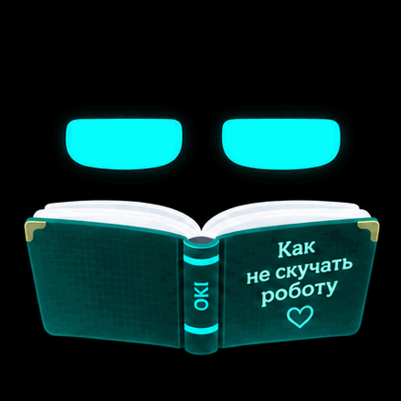

OKBIT / OKI
ANIMATION STUDIO · 0.2
Перелистывание книги
Оригинальная GIF-анимация и WAV-звук из прототипа OKI. Запустите их вместе или прослушайте звук отдельно.

Оригинальная GIF-анимация · 8 кадров · около 1,2 секунды
Исходники сохранены без изменений: страница воспроизводит приложенные page_turn.gif и page_turn.wav. WAV — синтезированный прототип шелеста бумаги, не полевая запись. Демонстрация предназначена для просмотра в браузере; перед переносом в Android отдельно проверьте синхронизацию и расход памяти.